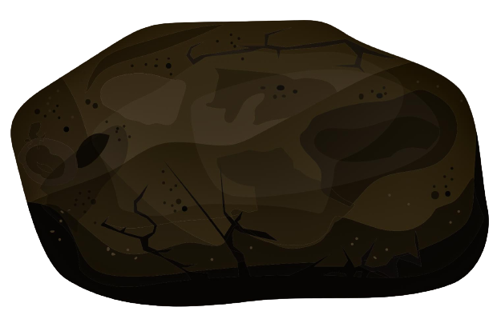
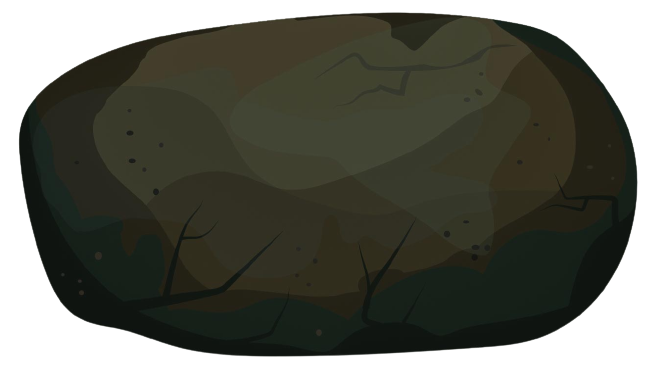

親水大挑戰
台灣人親水遊憩的難題


台灣各地的水域情形如何？
台灣水，怎麼管？

因《觀光發展條例》第36條第1項，及第60條第1項，地方政府能以危險之由，規範人民下水的自由。

然而，大法官的意見書指出，政府應重新思考管理方法，與人民使用公共水域的自由平衡。

中央鼓勵人民走入自然，但地方政府依舊擔心民眾出意外，會有相關責任與輿論壓力。

對此，大法官也對此指出，台灣在開放山林政策後已修正國家賠償法第3條第3項。政府應加強的是國人的戶外安全教育、風險評估與急難救助等能力。

使用自然真的是人民的基本權力嗎？還是這只是我們的娛樂休閒行為而已，和人民的基本自由沒有絕對關係？
我國憲法雖然並未明確規定「自然環境的公眾近用權」，尚未保障使用自然的基本權利，但我們應重新檢討人民的自然近用權。